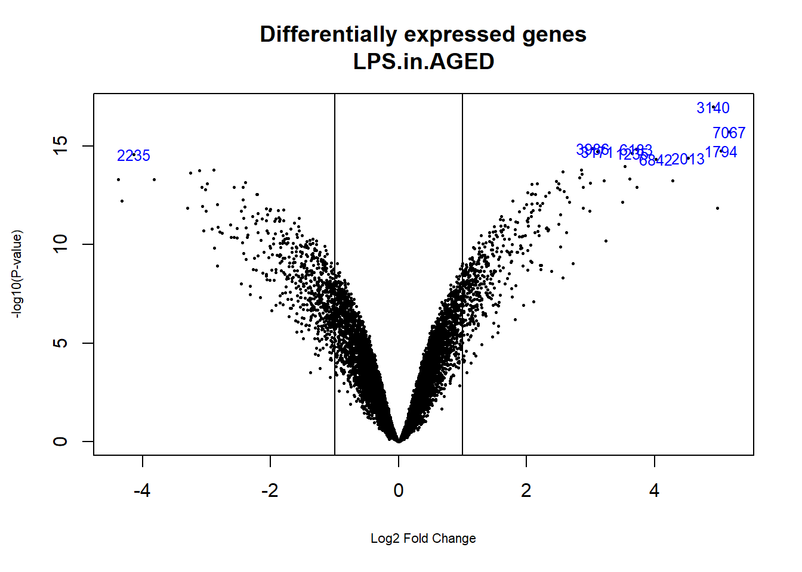

En la sección anterior se ha discutido el uso del test \(t\) y sus extensiones para la selección de genes diferencialmente expresados en situaciones relativamente sencillas, es decir cuando sólo hay dos grupos.
En muchos estudios el número de grupos a considerar es más de dos y las fuentes de variabilidad pueden ser más de una, por ejemplo una puede ser el tratamiento pero otra puede ser la edad de los individuos o cualquier otra condición fijada por el investigador o derivadad de la heterogeneidad de las muestras.
En estas situaciones una aproximación razonable en problemas con una variable respuesta es el análisis de la varianza, discutido en el capítulo here. En esta sección se presenta una aproximación equivalente que de forma general se denomina el modelo lineal. Este método -que engloba el análisis d la varianza y la regresión- es uno de los más usados en estadística y ha sido popularizado en el campo de microarrays gracias a los trabajos de Gordon Smyth quien ha creado el paquete limma que se ha convertido en la herramiente más utilizada para el análisis de microarrays.
El modelo lineal (ver por ejemplo Faraway, (Faraway:2004?)) es un marco general para la modelización y el análisis de datos estadística.
EL método consiste en asumir una relación lineal entre los valores observados de una variable respuesta y las condiciones experimentales. A partir de aquí se obtienen estimadores para los parámetros del modelo y de sus errores estándar, y (con algunas condiciones extra) es posible hacer inferencia acerca del experimento.
La aplicación de modelos lineales puede ser visto como un proceso secuencial, con los siguientes pasos:
El esquema anterior se puede aplicar a casi cualquier tipo de situación experimental. En la sección siguiente se presentan un par de ellas.
Swirl es una mutación puntual que provoca defectos en la organización del embrión en desarrollo a lo largo de su eje dorsal-ventral. Como resultado, algunos tipos celulares se reducen y otros se expanden. Un objetivo de este trabajo fue identificar los genes con expresión alterada en el mutante Swirl en comparación con “wild zebrafish.”
| 1 |
| 2 |
| 3 |
| 4 |
\end{center}
Los plásmidos IncHI codifican genes de resistencia múltiple a los antibióticos en S. enterica.
El plásmido R27 de la cepa salvaje es termosensible al transferirse.
Algunos fenotipos mutantes relacionados con hha y hns cromosómicos participan en diferentes procesos metabólicos de interés en la conjugación termoregulada.
El objetivo del experimento es encontrar qué genes se expresean diferencialmente en tres tipos de mutantes diferentes, \(M_1\), \(M_2\) y \(M_3\).
Este experimento debe ser planteado de forma diferente según el tipo de arrays (uno o dos colores) y qué comparaciones son las de mayor interés.
" width=“50%”>
" width=“50%”>
" width=“50%”>
Modelo, \(\mathbf{y=X\alpha+\varepsilon}\), y contrastes \(\mathbf{C'\beta}\)
\[ \left( \begin{array}{r} y_1 \\ y_2 \\ y_3 \\ y_4 \\ y_5 \\ y_6 \end{array} \right) = \underbrace{\left( \begin{array}{rrr} 1 & 0 & 0 \\ 0 & 1 & 0 \\ 0 & 0 & 1 \\ -1 & 0 & 0 \\ 0 & -1 & 0 \\ 0 & 0 & -1 \end{array} \right)}_{\text{Matriz de Diseño}, \mathbf{X}} \left( \begin{array}{c} \alpha_1 \\ \alpha_2 \\ \alpha_3 \end{array} \right) + \left( \begin{array}{r} \varepsilon_1 \\ \varepsilon_2 \\ \varepsilon_3\\ \varepsilon_4 \\ \varepsilon_5\\ \varepsilon_6 \end{array} \right) \] \[ \left( \begin{array}{r} \beta_1 \\ \beta_2 \\ \beta_3 \end{array} \right) = \underbrace{\left( \begin{array}{rrr} 1 & -1 & 0 \\ 1 & 0 & -1 \\ 0 & 1 & -1 \end{array} \right)}_{\text{Matriz de Contraste}, \mathbf{C}} \left( \begin{array}{c} \alpha_1 \\ \alpha_2 \\ \alpha_3 \end{array} \right). \]
Modelo, \(\mathbf{y=X\alpha+\varepsilon}\), y contrastes \(\mathbf{C'\beta}\)
Parámetros del modelo: \[ \alpha_1= \mathbf{E}\left (log\frac{M_1}{M_2}\right ),\ \alpha_2= \mathbf{E}\left (log\frac{M_2}{M_3}\right ). \] \(\alpha_3\) no es necesaria: \(\log \left( \frac{M_1}{M_3}\right )=\log\left(\frac{M_1}{M_2}\right )-\log\left(\frac{M_2}{M_3}\right)\).
Contrastes: Algunas de las comparaciones deseadas son precisamente los parámetros. \[\begin{array}{ccc} \beta_1 &=& \alpha_1,\\ \beta_2 &=& \alpha_2,\\ \beta_3 & =& \alpha_1+\alpha_2. \end{array}\]
\[ \left( \begin{array}{r} y_1 \\ y_2 \\ y_3 \\ y_4 \\ y_5 \\ y_6 \end{array} \right) = \underbrace{\left( \begin{array}{rr} 1 & 0 \\ 0 & 1 \\ 1 & -1 \\ -1 & 0 \\ 0 & -1 \\ -1 & 1 \end{array} \right)}_{\text{Matriz de Diseño}, \mathbf{X}} \left( \begin{array}{c} \alpha_1 \\ \alpha_2 \\ \end{array} \right) + \left( \begin{array}{r} \varepsilon_1 \\ \varepsilon_2 \\ \varepsilon_3\\ \varepsilon_4 \\ \varepsilon_5\\ \varepsilon_6 \end{array} \right) \]
\[ \left( \begin{array}{r} \beta_1 \\ \beta_2 \\ \beta_3 \end{array} \right) = \underbrace{\left( \begin{array}{rrr} 1 & 0 \\ 0 & 1 \\ 1 & +1 \end{array} \right)}_{\text{Matriz de Contraste}, \mathbf{C}} \left( \begin{array}{c} \alpha_1 \\ \alpha_2 \end{array} \right). \]
Modelo, \(\mathbf{y=X\alpha+\varepsilon}\), y contrastes \(\mathbf{C^{1'}\beta}\), \(\mathbf{C^{2'}\beta}\)
Comparación entre tipo de mutantes \((\mathbf{C^{1'}\beta})\) \[\begin{array}{ccc} \beta_1^1 &=& \alpha_1-\alpha_2,\\ \beta_2^1 &=& \alpha_3-\alpha_2,\\ \beta_3^1 &=& \alpha_2-\alpha_3. \end{array}\]
Comparación entre cada mutantes y el wild type \((\mathbf{C^{2'}\beta})\) \[\begin{array}{ccc} \beta_1^2 &=& \alpha_4-\alpha_1,\\ \beta_2^2 &=& \alpha_3-\alpha_1,\\ \beta_3^2 &=& \alpha_2-\alpha_1. \end{array}\]
\[ \left( \begin{array}{r} y_1 \\ y_2 \\ y_3 \\ y_4 \\ y_5 \\ y_6 \\ y_7 \\ y_8 \end{array} \right) = \underbrace{\left( \begin{array}{rrrr} 1 & 0 & 0 & 0\\ 1 & 0 & 0 & 0\\ 0 & 1 & 0 & 0 \\ 0 & 1 & 0 & 0 \\ 0 & 0 & 1 & 0 \\ 0 & 0 & 1 & 0 \\ 0 & 0 & 0 & 1 \\ 0 & 0 & 0 & 1 \end{array} \right)}_{\text{Matriz de Diseño}, \mathbf{X}} \left( \begin{array}{c} \alpha_1 \\ \alpha_2 \\ \alpha_3 \\ \alpha_4 \end{array} \right) + \left( \begin{array}{r} \varepsilon_1 \\ \varepsilon_2 \\ \varepsilon_3\\ \varepsilon_4 \\ \varepsilon_5\\ \varepsilon_6\\ \varepsilon_7\\ \varepsilon_8 \end{array} \right) \]
\[ \left( \begin{array}{r} \beta_1^1 \\ \beta_2^1 \\ \beta_3^1 \end{array} \right) = \underbrace{\left( \begin{array}{rrrr} 1 & -1 & 0 & 0\\ 1 & 0 & -1 & 0\\ 0 & 1 & -1& 0 \end{array} \right)}_{\text{Matriz de Contraste}, \mathbf{C^1}} \left( \begin{array}{c} \alpha_1 \\ \alpha_2 \\ \alpha_3 \\ \alpha_4 \end{array} \right). \]
\[ \left( \begin{array}{r} \beta_1^2 \\ \beta_2^2 \\ \beta_3^2 \end{array} \right) = \underbrace{\left( \begin{array}{rrrr} 1 & 0 & 0 & -1\\ 0 & 1 & 0 & -1\\ 0 & 0 & 1 & -1 \end{array} \right)}_{\text{Matriz de Contraste}, \mathbf{C^2}} \left( \begin{array}{c} \alpha_1 \\ \alpha_2 \\ \alpha_3 \\ \alpha_4 \end{array} \right). \]
El objetivo de este experimento es estudiar el efecto de las citoquinas sobre la estimulación de una sustancia (LPS) y ver como esta relación se ve afectada por la edad.
Se trata de un modelo de un un factor (tratamiento, asignable por el individuo) y un bloque (edad, no asignable, prefijada en cada ratón). En la práctica el modelo equivale al del análisis de la varianza de dos factores.
| % after : or … |
| 1 |
| 2 |
| 3 |
| 4 |
| 5 |
| 6 |
| 7 |
| 8 |
| 9 |
| 10 |
| 11 |
| 12 |
\end{center}
Aquí se adopta la segunda parametrización.
Parámetros del modelo: \[\begin{array}{ccc} \alpha_1&=& \mathbf{E} (log{LPS.Aged} ),\ \alpha_2= \mathbf{E} (log{Med.Aged} ),\\ \alpha_3&=&\mathbf{E} (log{LPS.Young} ),\, \alpha_4=\mathbf{E} (log{Med.Young} ). \end{array}\]
Contrastes: Preguntas que interesa responder: \[\begin{array}{ccc} \beta_1^1 &=& \alpha_3-\alpha_1,\quad \mbox{Efecto del tratamiento en ratones viejos} \\ \beta_2^1 &=& \alpha_4-\alpha_2,\quad \mbox{Efecto del tratamiento en ratones jóvenes} \\ \beta_3^1 &=& (\alpha_3-\alpha_1)- (\alpha_2-\alpha_4),\quad \mbox{Interacción: diferencia entre efectos} \end{array}\]
Modelo lineal:
Modelo, \(\mathbf{y=X\alpha+\varepsilon}\), y contrastes \(\mathbf{C'\beta}\)
$$ ( \[\begin{array}{r} y_1 \\ y_2 \\ y_3 \\ y_4 \\ y_5 \\ y_6 \\ y_7 \\ y_8 \\ y_9 \\ y_{10} \\ y_{11} \\ y_{12} \end{array}\] ) = _{, } ( \[\begin{array}{c} \alpha_1 \\ \alpha_2 \\ \alpha_3 \\ \alpha_4 \end{array}\] ) + ( \[\begin{array}{r} \varepsilon_1 \\ \varepsilon_2 \\ \varepsilon_3\\ \varepsilon_4 \\ \varepsilon_5\\ \varepsilon_6\\ \varepsilon_7\\ \varepsilon_8 \end{array}\]) $$
\[ \left( \begin{array}{r} \beta_1^1 \\ \beta_2^1 \\ \beta_3^1 \end{array} \right) = \underbrace{\left( \begin{array}{rrrr} -1 & 0 & 1 & 0\\ 0 & -1 & 0 & 1\\ -1 & 1 & 1 & -1 \end{array} \right)}_{\text{Matriz de Contraste}, \mathbf{C}} \left( \begin{array}{c} \alpha_1 \\ \alpha_2 \\ \alpha_3 \\ \alpha_4 \end{array} \right) \]
Una vez se ha expresado el experimento como un modelo lineal: \[ \mathbf{E(y_g)=X\alpha_g},\quad \text{var}(y_g)=W_g\sigma_g, \] es posible usar la teoría estándar del modelo lineal (ver (Faraway:2004?)) para obtener:
Los procedimientos de estimación y de inferencia no dependen de qué parametrización se ha adoptado, a pesar de que distintas parametrizaciones piedan dar lugar a distintos valores numéricos..
El enfoque del modelo lineal es flexible y potente:
Por otro lado hay que tener en cuenta que, si las suposiciones no se cumplen, entonces las conclusiones deben tomarse con precaución.
Y lo que es peor, aún siendo válidas las suposiciones del modelo los resultados pueden verse afectados por el tamaño de la muestra de forma que, en muestras pequeñas donde pueden haber variaciones más grandes es fácil que se obtengan valores \(t\) no significativos o, por el contrario, excesivamente significativos (si la variación es muy reducida).
La metodología desarrollada por Smyth (Smyth, Michaud, and Scott (2005)) basada en los resultados de L"onsted & Speed (Speed (2003)) está dirigida a abordar cómo hacer frente a estas debilidades.
Smyth (Smyth, Michaud, and Scott (2005)) considera el problema de la identificación de genes que se expresan diferencialmente en las condiciones especificadas en el diseño de experimentos de microarrays. Como hemos dicho repetídamente la variabilidad de los valores de expresión difiere entre genes, pero la naturaleza paralela de la inferencia en microarrays sugiere la posibilidad de usar la información de todos los genes a la vez para mejorar la estimación de los parámetros, lo que puede llevar a una inferencia más fiable.
Básicamente lo que propone Smyth (Smyth, Michaud, and Scott (2005)) es una solución en tres pasos:
El hecho de trabajar con logaritmos permite poner el punto de corte en el cero: A mayor valor positivo más probable es que el gen esté diferencialmente expresado. A mayor valor negativo, más probable es que no lo esté
El paquete de Bioconductor limma al que hemos hecho referencia en los párrafos anteriores implementa el método de Smyth para la regularización de la varianza lo que lo ha convertido en muy popular entre los usuarios de microarrays
El código siguiente muestra como se crea la matriz del diseño y los contrastes para realizar el análisis mediante modelos lineales;
Empezamos por la matriz de diseño.
## Aged.LPS Aged.MED Young.LPS Young.MED
## Aged LPS 80L.CEL 1 0 0 0
## Aged LPS 86L.CEL 1 0 0 0
## Aged LPS 88L.CEL 1 0 0 0
## Aged Medium 81m.CEL 0 1 0 0
## Aged Medium 82m.CEL 0 1 0 0
## Aged Medium 84m.CEL 0 1 0 0
## Young LPS 75L.CEL 0 0 1 0
## Young LPS 76L.CEL 0 0 1 0
## Young LPS 77L.CEL 0 0 1 0
## Young Medium 71m.CEL 0 0 0 1
## Young Medium 72m.CEL 0 0 0 1
## Young Medium 73m.CEL 0 0 0 1
## attr(,"assign")
## [1] 1 1 1 1
## attr(,"contrasts")
## attr(,"contrasts")$lev
## [1] "contr.treatment"Usando los nombres de las columnas de la matriz de diseño creamos los contrastes
require(limma)
cont.matrix <- makeContrasts (
LPS.in.AGED=(Aged.LPS-Aged.MED),
LPS.in.YOUNG=(Young.LPS-Young.MED),
AGE=(Aged.MED-Young.MED),
levels=design)
cont.matrix## Contrasts
## Levels LPS.in.AGED LPS.in.YOUNG AGE
## Aged.LPS 1 0 0
## Aged.MED -1 0 1
## Young.LPS 0 1 0
## Young.MED 0 -1 -1Una vez definida la matriz de diseño y los contrastes podemos pasar a estimar el modelo, estimar los contrastes y realizar las pruebas de significación que nos indiquen, para cada gen y cada comparación, si puede considerarse diferencialmente expresado.
La penúltima instrucción ejecuta el proceso de regularización de la varianza utilizando modelos de Bayes empíricos para combinar la información de toda la matriz de datos y de cada gen individual y obtener estimaciones de error mejoradas.
El análisis proporciona los estadísticos de test habituales como Fold–change \(t\)-moderados o \(p\)-valores ajustados que se utilizan para ordenar los genes de mas a menos diferencialmente expresados.
A fin de controlar el porcentaje de falsos positivos que puedan resultar del alto numero de contrastes realizados simultaneamente los p–valores se ajustan de forma que tengamos control sobre la tasa de falsos positivos utilizando el metodo de Benjamini y Hochberg (Benjamini and Hochberg (1995)).
La funcion topTable genera para cada contraste una lista de genes ordenados de mas a menos diferencialmente expresados.
topTab_LPS.in.AGED <- topTable (fit.main, number=nrow(fit.main), coef="LPS.in.AGED", adjust="fdr")
topTab_LPS.in.YOUNG <- topTable (fit.main, number=nrow(fit.main), coef="LPS.in.YOUNG", adjust="fdr")
topTab_AGE <- topTable (fit.main, number=nrow(fit.main) , coef="AGE", adjust="fdr")Se puede visualizar los resultados mediante un volcano plot que, en este caso, representa en abscisas los cambios de expresión en escala logarítmica y en ordenadas el estadístico \(B\) en vez de el “menos logaritmo” del p-valor.
coefnum = 1
opt <- par(cex.lab = 0.7)
volcanoplot(fit.main, coef=coefnum, highlight=10, names=fit.main$ID,
main=paste("Differentially expressed genes",colnames(cont.matrix)[coefnum], sep="\n"))
abline(v=c(-1,1))
par(opt)